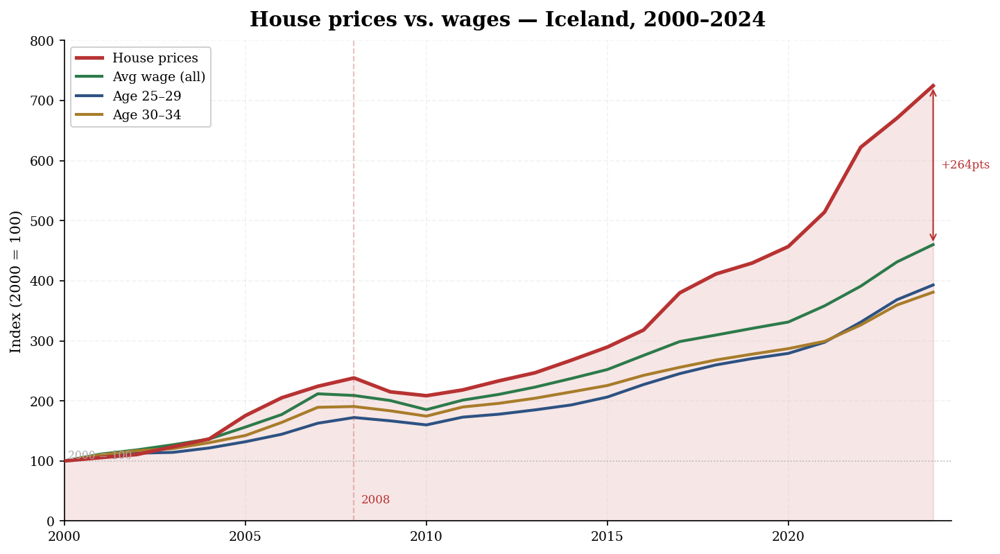
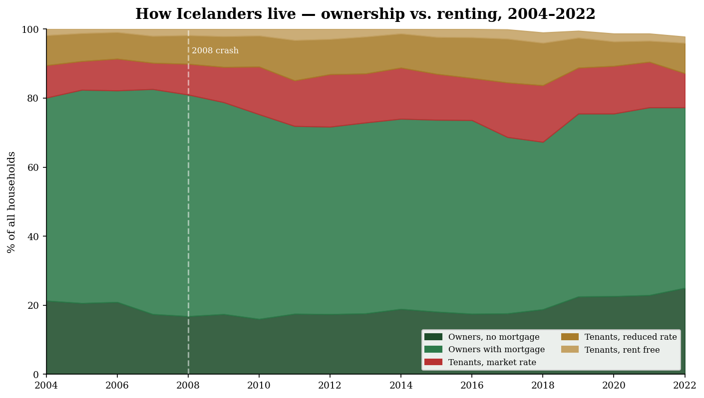

The price of a home has moved faster than the people trying to buy one.
This data story explores Iceland’s housing squeeze through wages, ownership, renting,
tourism pressure, and age. The main question is simple: why has entering the housing
market become harder, especially for young adults?
Story design
A martini glass structure
The story starts in a guided way: first, it shows the widening gap between house prices
and wages. Then it opens up into exploratory visualizations about tenure, tourism, and
age groups. Finally, it closes again with a guided interpretation of what the patterns
mean together.
The purpose is not only to show that housing is expensive. The purpose is to explain
how different pressures combine: prices rise faster than wages, ownership becomes
harder, tourism adds demand, and young adults face the market with lower income.
01 · The affordability gap
House prices grew faster than wages.
The first figure sets house prices and wages to the same starting point in 2000. This
makes the comparison easier to read: every line begins at 100, so the important thing is
how fast each one grows afterwards.

Figure 1. House prices have significantly outpaced wages since 2000.
Both house prices and wages are indexed to 100 in 2000. By 2024, house prices reach
above 720, while the average wage reaches around 460. The gap is even larger for
younger age groups, especially people aged 25–29 and 30–34. The shaded area highlights
the affordability gap: the part of house-price growth that wages did not keep up with.
This is the core problem of the story. Icelanders are not simply facing “higher prices”;
they are facing prices that have grown faster than the income needed to pay for them.
For first-time buyers, this matters because they enter the market before they have had
time to build wealth or equity.
02 · The market response
When buying becomes harder, renting becomes the fallback.
Housing affordability also changes how people live. If ownership becomes harder to reach,
more households remain renters or delay buying. Tenure status helps show this structural
shift.

Figure 2. Homeownership declined while market-rate renting increased after the financial crisis.
The stacked area chart shows how Icelandic households were distributed across ownership
and rental categories from 2004 to 2022. After the 2008 crash, ownership with a mortgage
fell and did not fully return to its earlier level. At the same time, market-rate renting
became more visible, especially in the years after the crisis. This suggests that
affordability pressure is not only about prices, but also about a shift in housing security.
This figure adds the second part of the story: the affordability gap does not stay abstract.
It changes the path into adulthood and homeownership.
03 · The external pressure
Tourism added pressure to an already tight housing market.
The story then becomes exploratory. Instead of only looking at households, the next figure
looks at tourism pressure using registered rental cars as a proxy. This is not a perfect
measure of tourism, but it clearly captures the scale and seasonality of visitor activity.
Figure 3. Tourism expanded rapidly and shows strong seasonal peaks.
The heatmap shows monthly rental car fleet size from 2011 to 2025. The growth from 2011
to 2018 is clear, with summer months becoming especially intense. The sharp drop around
2020 reflects the COVID-19 collapse in travel. This matters for the housing story because
tourism can increase demand for short-term accommodation, which may compete with long-term
rental supply.
The heatmap is useful because it does not just show growth; it shows rhythm. Iceland’s
tourism pressure is seasonal, peaking during summer, and that seasonal demand can still
affect a year-round housing market.
Figure 4. Tourism growth coincides with an increase in market-rate renting.
This figure compares rental car fleet size with the share of market-rate renters.
Both series rise during much of the 2011–2018 tourism boom. The figure should not be read
as proof that tourism alone caused higher renting, but it supports the interpretation
that tourism was one pressure among several in an already strained housing market.
This is the important storytelling point: tourism is not presented as the only cause.
It is presented as an accelerator. The housing market was already becoming harder to enter;
tourism added another layer of demand.
04 · The generational squeeze
Young adults face the housing market before their income peaks.
The final exploratory figure focuses on age. This matters because the people most likely
to enter the housing market are not the people with the highest income. They are often in
their twenties or early thirties.
Figure 5. Younger age groups struggle most to keep up with housing costs.
The bars show mean income by age group, while the dotted line represents the house-price
level scaled into the same income frame. As the slider moves forward in time, the house
price line separates from the younger age groups. By the later years, people aged 25–34
are far below the scaled house-price level. This shows why the affordability problem is
especially difficult for first-time buyers.
This figure connects the earlier charts back to people. The housing crisis is not just a
macroeconomic trend; it affects people at the exact stage of life when they are expected
to become independent.
Conclusion
The crisis is quiet, but visible.
Taken together, the figures tell a story of delayed access rather than sudden collapse.
House prices rose faster than wages. Ownership became harder to reach. Tourism added
pressure to the rental market. Younger adults faced these conditions with lower income.
Finding 01
Prices outgrew wages
The indexed comparison shows that house prices have grown much faster than wages since 2000.
Finding 02
Renting became more important
Tenure patterns suggest that households increasingly rely on renting when ownership becomes harder.
Finding 03
Young adults are squeezed first
Younger age groups enter the housing market before their income peaks, making them especially exposed.
Iceland’s housing crisis does not only show up when people miss payments.
It shows up earlier: when young adults cannot afford to leave home in the first place.